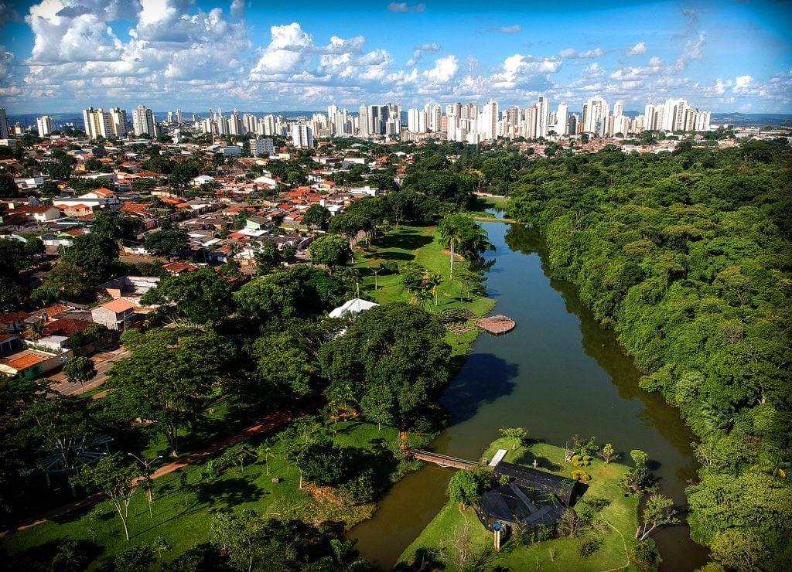

Goiás fica na região Centro-Oeste do Brasil e tem como capital a cidade de Goiânia. O estado é conhecido por suas belezas naturais, como cachoeiras, parques e a Chapada dos Veadeiros, que é uma área protegida cheia de trilhas e paisagens incríveis. A economia de Goiás é diversificada, com destaque para a agricultura (soja, milho e algodão), pecuária e mineração. Também tem indústria e comércio importantes, principalmente em Goiânia. Goiás tem um clima tropical, com estação seca no inverno e chuvosa no verão, e uma cultura rica, com festas tradicionais como o Festa do Divino e muita música sertaneja.
